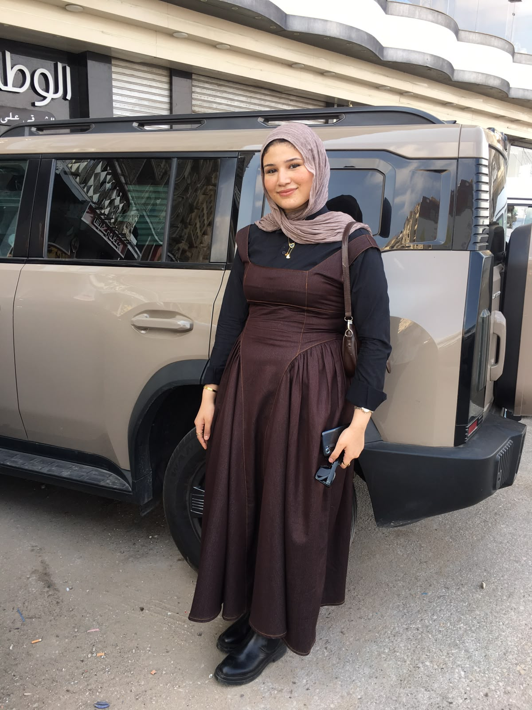
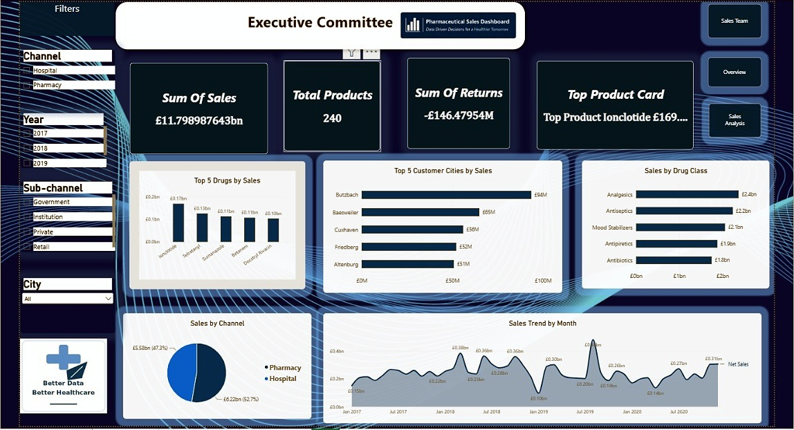
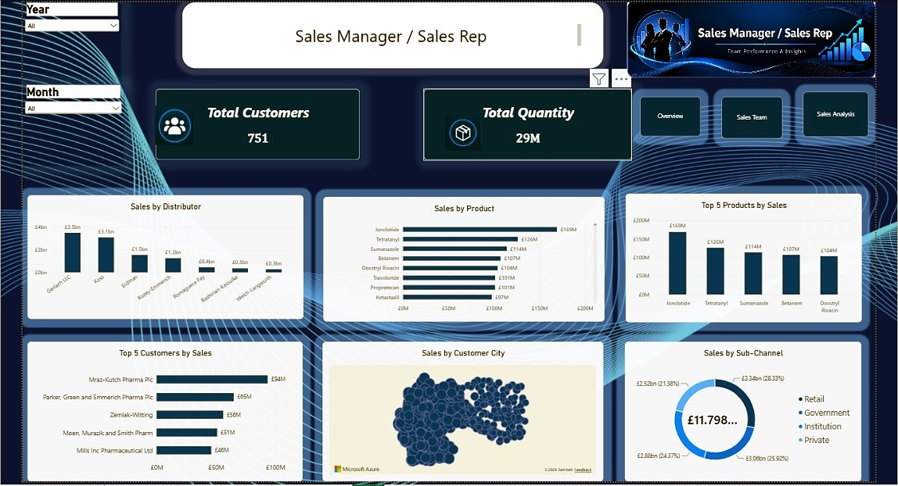
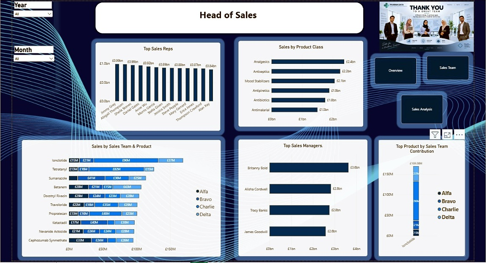

Microsoft Excel
Data preparation, organization, exploration and analysis.
DATA ANALYST • BUSINESS INTELLIGENCE
Science student at Tanta University developing practical skills in Excel, Power BI, SQL, and Python through projects and hands-on practice.

01 / ABOUT
I am a Science student at Tanta University with a strong interest in Data Analysis and Business Intelligence. I enjoy organizing raw data, exploring patterns, and turning results into visual stories that are easy to understand.
My current practice focuses on data preparation, SQL analysis, interactive Power BI dashboards, and Python fundamentals for structured datasets.
02 / TOOLKIT
Data preparation, organization, exploration and analysis.
Interactive dashboards, KPIs, trends and visual storytelling.
Data querying, exploration and extracting useful business information.
Fundamentals for data analysis and structured datasets.
03 / FEATURED WORK
PROJECT 01
A multi-page Power BI dashboard project showcasing sales performance, products, returns, customer cities, channels, drug classes and sales-team performance through clean, interactive visual views.



PROJECT ROADMAP
Power BI · Products · Time · Regions · KPIs
Excel + Power BI · Trends · Top products · Insights
SQL + Power BI · Purchasing behavior · Segments
04 / CONTACT
Open to learning opportunities, data projects and collaborations.